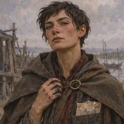
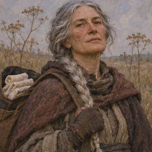
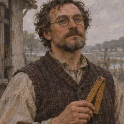
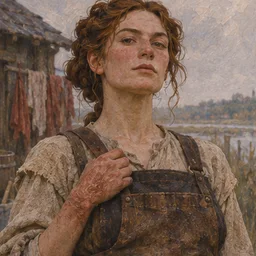
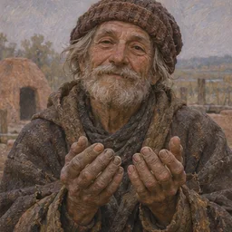
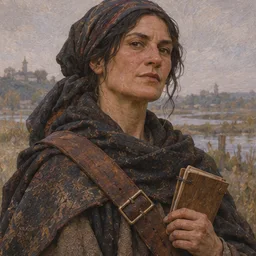

Арен Таль
воин 3 · ОЗ 31 · КД 11 · Скорость 30 фтБывший палубный рабочий; в последнем плавании ехал пассажиром.
Широкие ладони, короткая борода и просоленная куртка; на поясе обычный рабочий нож.
После крушения хочется сделать хотя бы одно дело, которое действительно закончится. Каким будет это дело, выбираешь ты.
Открыть фигурку для поля
Оружие и заклинания
Оружие · Длинный меч, Ручной топор

Мара Сель
плут 3 · ОЗ 24 · КД 13 · Скорость 30 фтКартограф троп и каменных карьеров.
Узкий дорожный плащ, остриженные волосы и чернильные следы на пальцах; карта в кармане размокла.
Ты привыкла доверять дорогам, которые проверила сама. Подземный берег даёт работу твоему вниманию, но не обещает правильного ответа.
Открыть фигурку для поля
Оружие и заклинания
Оружие · Рапира, Короткий лук

Савра Эйн
жрец 3 · ОЗ 24 · КД 11 · Скорость 30 фтХранительница погребального дома и организатор общих трапез.
Седая коса, потёртые перчатки и дорожная сумка с чистыми тканями; говорит низко и спокойно.
Ты много раз помогала другим прощаться. Теперь собственная смерть не отвечает на вопрос, чего хочешь ты сама.
Открыть фигурку для поля
Оружие и заклинания
Оружие · Боевой посох
Заклинания · Лечащее слово, Обнаружение магии

Элден Рой
волшебник 3 · ОЗ 20 · КД 12 · Скорость 30 фтИзмеритель каменных сводов, изучавший магию нагрузок.
Круглые очки, шерстяной жилет и складная деревянная мерка без особых свойств.
Смерть не отняла привычку разбираться, что держит потолок. Тебе предстоит решить, всегда ли полезно искать ещё одну проверку.
Открыть фигурку для поля
Оружие и заклинания
Оружие · Боевой посох
Заклинания · Обнаружение магии, Туманный шаг

Рада Век
воин 3 · ОЗ 31 · КД 11 · Скорость 30 фтСвечница и участница добровольной береговой дружины.
Плотный фартук поверх дорожного платья, обожжённая рабочая рука и ровная осанка.
Ты не успела открыть свою мастерскую. Можно хотеть вернуться ради малого дела, не оправдывая его перед великими замыслами.
Открыть фигурку для поля
Оружие и заклинания
Оружие · Длинный меч, Ручной топор

Ним Верес
плут 3 · ОЗ 24 · КД 13 · Скорость 30 фтГончар, привыкший искать покупателям подходящую вещь.
Вязаная шапка, мягкие сапоги и треснувший ноготь; на ладонях сохранилась глина.
Ты оставил много незаконченной посуды и мало больших обещаний. Необязательно делать из этого ни трагедию, ни утешение.
Открыть фигурку для поля
Оружие и заклинания
Оружие · Рапира, Короткий лук

Лея Руш
жрец 3 · ОЗ 24 · КД 11 · Скорость 30 фтПереводчица при приюте для взрослых странников.
Тёмный платок, широкая перевязь для сумки и маленькая записная дощечка.
Ты привыкла следить, чтобы человека поняли. Теперь важно не превратить чужое молчание в удобное согласие.
Открыть фигурку для поля
Оружие и заклинания
Оружие · Боевой посох
Заклинания · Лечащее слово, Обнаружение магии